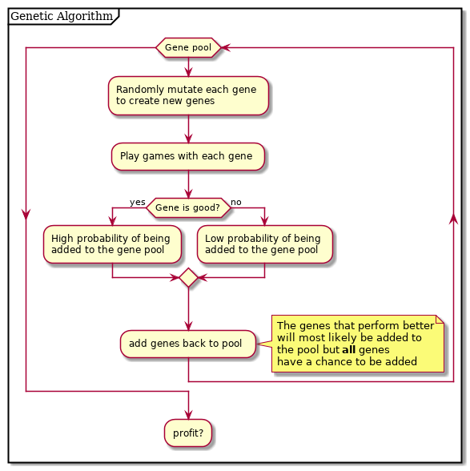

Machine Learn You Some Dota2
Table of Contents
Introduction
The problem is this; We have a Dota2 bot that is becoming increasingly hard to program. Our bot is built with a heuristics based state machine. Each state has a hard coded weight that will give precedence to an action that can be taken that moment. Dota is an incredibly complex game and it is nearly impossible to tell if a change to a weight is beneficial or if the bot just got lucky one game. We need a way to run hundreds of games and get hard data on if the change was beneficial.
Distributed Dota as a service
Docker as a Function
We need to run a Dota executable multiple times with different bot files to determine which set of weights were the most effective in practice. Docker is the obvious choice. Docker lets us automatically load the game, bot files, and return the output. Setting up a docker container that grabs the Dota and bot files from the local disk is simple. After some googling and testing we have a way to run a game of Dota and pipe the output to a file.
FROM fedora:latest COPY . /scripts VOLUME /dota CMD sh /scripts/run_game.sh
Parsing Game Logs
Of course Dota couldn't provide nice json files as logs so let's get
to parsing. Dota game logs vary in length but are consistent with
spacing and formatting. For example, if a tower dies the log will
always read: Building: npc_dota_3_tower destroyed. Man if only there
were a way to use regular expressions to match lines and grab fields
from those lines.
AWK
Awk is a specific purpose programming language (like wolfram alpha or bison) as opposed to a general purpose programming language (like Lisp or Prolog). This means that awk does one thing, and one thing well; text stream processing. Using Gnu Awk we can easily write statement that will write the time a tower dies. Using this as the basis, it is a non issue to implement every other action that can happen throughout the game.
if($0 ~ /Building: npc_dota_.*_(tower|rax)/){ printf "tower %s died at %d", $2, systime() }
Distributed Dota
We can run multiple games and pipe the nicely formatted output to files. Now we would like to run hundreds of games and use the data from them to create pretty graphs representing how well our bot does. each docker container runs one game of Dota, uses two cores, and about 1.3 gigs of ram. Since our computers have 8 threads and 8 gigs of ram we can optimally run 4 games at a time. What we would like to do is tell the server to run 100 games and have each computer run up to 4 games in parallel until that 100 game quota is met.
Coroutines Are Cool
We will build our own custom solution in a programming language made for distributed computing. Our general layout will work like this.
Server
The server is informed that 100 games are to be played. The server then starts each worker and opens a http server to listen for requests from each worker. It listens for a START request and replies yes or no depending on if there are still games to be run or not. If it receives a json file instead of a start request it will log it and continue on. The server is just smart enough to worry about how many games it is running and how many games it needs to run, nothing else. Load balancing is handled by the worker.
// start http server finished.Add(1) go httpListener() // spin up workers for i, worker := range(workers) { fmt.Printf("Starting worker %s\n", worker) err := startWorker(worker) if err != nil { log.Print(err) } } // wait for every worker to complete their games finished.Wait()
finished is a wait group meaning that finished.Wait() will block until every worker has sent back it's json data.
Worker
The worker is in charge of load balancing it's computer and running
games. When the server is woke it sends MAX_GAMES requests to the
server, asking to start games. In Go this is easy
limit := limiter.NewConcurrencyLimiter(MAX_GAMES) done := false for !done { done = limit.Execute(RunGame) time.Sleep(time.Second * 3) // because other computers are slow } limit.Wait()
RunGame sends a http request to the server and runs a game based on
the response. since running a docker container/Dota game, blocks until
it has finished running we need to spawn a new process every time we
start a game. Again, in Go this is easy.
Now that we have our server and workers communicating nicely we can run lots of games and generate huge amounts of data.
Machine Learning
As fun as tweaking random bot variables is, it's not very efficient.. for humans. Luckily computers can do boring tasks very fast. Since we have a lack of time and processing power we will use an algorithm that takes less of both.
Genetic Algorithms
Genetic algorithms are a type of machine learning based on random mutations and survival of the fittest. Instead of running the server once and getting a result back, we want that resul to be fed back into next round's bots. The new server will work as follows:

In the sake of clarity i'm not explaining the nitty gritty of how genes are selected but if you want to learn more about genetic algorithms wikipedia has a good list here. Genetic algorithms are just a small taste of machine learning and are still incredibly complicated.
Implementing a genetic algorithm is only as hard as running the server over and over and processing data. In order to process each games data we need to write a function that will go over the logs and generate a fitness score for each hero. A fitness score is a cumulative score of how well the bot did with the new mutaed genes. An example fitness function would look something like this:
func CalculateFitness(hero *heroEvaluation) float64 { fitness := 0.0 fitness += hero.winrate * WIN_MOD fitness += hero.killsPerMinute * KPM_MOD fitness += hero.assistsPerMinute * APM_MOD fitness += hero.goldPerMinute * GPM_MOD fitness += hero.deathsPerMinute * DPM_MOD fitness += hero.experiencePerMinute * XPM_MOD return fitness }
Each score would then be added together and given a percentage to be incorperated into the gene pool.
chance := (totalFitness / heroFitness)
And voila, you taught a computer to reproduce. Go have some cake, you deserve it bud.
Conclusion
Writing a Dota bot is not fun. Designing and implementing a distributed, machine learning powered dota swarm is. The complexity and variance in each little problem means that we were able to help each other solve things we may not have learned in a one dimensional project. From docker, to machine learning, to shell scripting and network administration. I learned a lot about programming and, more importantly, project design and problem solving.